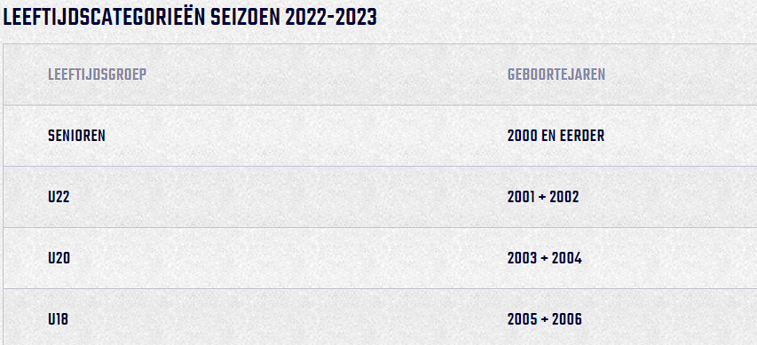
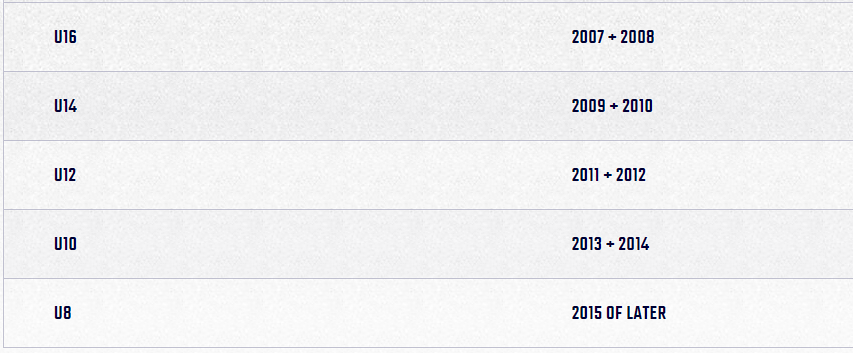

Wat voor jeugdniveaus zijn er allemaal in nederland?
Hieronder vind u het antwoord
Omdat leeftijd een grote impact heeft op prestaties, word iedereen onder de 22 op leeftijd ingedeeld
De teams die daardoor ontstaan zijn: U8, U10, U12, U14, U16, U18, U20 en U22. De U hierin staat voor "onder".
Mocht een club niet genoeg spelers hebben om een team in een category te maken kunnen de spelers een team hoger of lager spelen
Als ze een team hoger spelen gebeurt er niks bijzonders. Als ze een team lager spelen dan gaan krijgt dat team een dispensatie, ze kunnen dus geen kampioen meer worden
 Er zijn heel wat aanpassingen in de regels bij lagere leeftijden
De < U12 teams spelen op een lagere basket(2.6 meter i.p.v. 3.05), ook hebben zij kortere wedstrijden met andere tijden(8 * 4 minuten i.p.v. 4 * 10)
Deze spelers mogen ook geen "screens" zetten, dit is een actie waarbij een aanvallende speler op een manier gaat staan dat de verdediger tegen hem aanloopt en niet meer achter de bal aan kan
De enige uitzonderingsregel van de U14 is dat er geen zone verdediging gespeeld mag worden, dit is wanneer verdedigers een plek op het veld verdedigen i.p.v. een specifieke tegenstander